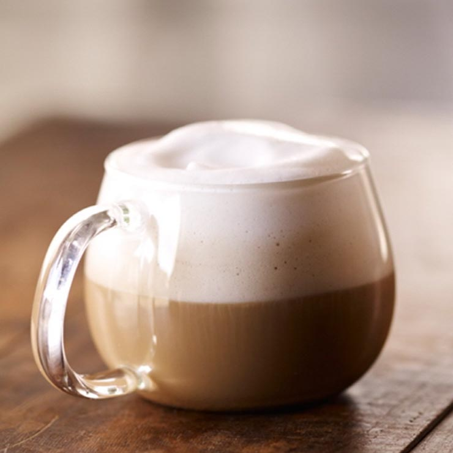

| 홈>메뉴>커피> 카푸치노 | ||||
|  | ||||
카푸치노Cappuccino |
||||
| 벨벳 같은 우유 거품과 에스프레소 샷의 절묘한 조화! | ||||
| 제품 영양 정보 | Tall(톨) / 355ml (12floz) | |||
|
1회 제공량 (kcal) 포화지방 (g) 단백질 (g) |
110 3 6 |
나트륨 (mg) 당류 (g) 카페인 (mg) |
70 8 75 |
|
| 알레르기 유발요인 : 우유 | ||||
|
풍부하고 진한 농도의 에스프레소에 따뜻한 우유와 벨벳같은 우유 거품이 1:1 비율로 어우러저 마무리된 대표적인 에스프레소 음료 입니다. |
||||